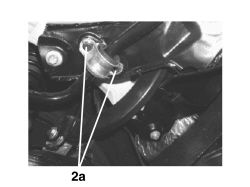
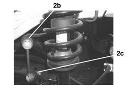

4420CA CHECKS ON REAR ANTI-ROLL BAR
- Path
- Test > 44 SUSPENSION AND WHEELS > 4420 REAR SUSPENSION > 4420C REAR SUSPENSION STABILIZER BAR/LINKS > 4420CA CHECKS ON REAR ANTI-ROLL BAR
- Kind
- test / check procedure
- Applies to
- all engines; all production periods
- Interactive page
- https://sloeber94.github.io/elrnDB-aBrrSpdr/en/#/946001049
Applies to: all engines; all production periods
Position the vehicle on a two column lift.
Raise the vehicle and check that the anti-roll bar is correctly positioned (transversely) in relation to the centre line.
Check that the paint is not worn at the contact points between the bar and the crossmember.
Using a torque wrench calibrated to the recommended value, check that the fastenings between the bar and the crossmember (2a) and between the bar and the connecting rod (2b) and between the connecting rod and the longitudinal rod (2c) are tightened to the torque indicated below.
Type of fastening | Component | Torque (daNm) | |
|---|---|---|---|
2a | Nut M8X1.25 | Crossmember | 2,5 |
2b | Nut M12X1.75 | Shock absorber | 8 |
2c | Nut M12X1.75 | Longitudinal bar | 8 |

